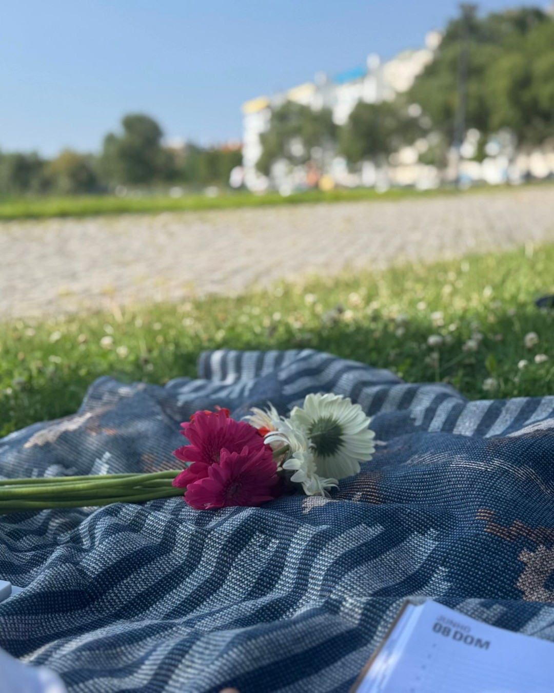

01
Porque aprendeste que o teu valor estava em servir. Cuidar dos outros foi o lugar onde te sentiste amada.
02
Não. É deixar de te abandonar enquanto cuidas de todos.
03
Quando estás sempre cansada, dizes sim sem pensar e já não sabes o que te faz feliz.

04
Por pequenos gestos: uma pausa por dia, um não sem justificação e a pergunta “do que é que eu preciso hoje?”
05
Alguns não vão entender. E está tudo bem. Quem te ama aprende a amar-te inteira.